What Is Myofunctional Therapy?
Start here. A one-minute introduction from a dental and orthodontic practice to what myofunctional therapy is and how it can improve orthodontic treatment.
Research & Resources
Short videos that show what therapy looks like, before-and-after photos and research from published studies, and trusted places to keep learning.
Four videos from clinicians in the field, from a quick overview to a deeper talk.
Start here. A one-minute introduction from a dental and orthodontic practice to what myofunctional therapy is and how it can improve orthodontic treatment.
The signs and symptoms that may mean it is time to look into therapy.
See what common exercises for the tongue, lips, and face actually look like.
A deeper talk on how therapy and tongue-tie release can fit into sleep apnea care.
These photos come from case reports published in medical and dental journals and shared under an open license. They are not our patients. In each case, myofunctional therapy was one part of a larger plan that also included a tongue-tie release, an oral appliance, or braces. Every patient is different, and results vary.
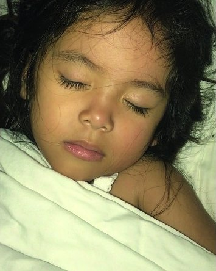
Case report · 2019
In this case from Dr. Soroush Zaghi’s team at the Breathe Institute, a 3-year-old girl breathed through her mouth, snored, and struggled to eat. Her tight tongue-tie and lip-tie were released while she continued myofunctional therapy. Within four days she was sleeping with her lips closed and had stopped snoring. About six months later, her family reported she had completely stopped mouth breathing and snoring in her sleep.
Treatment Tongue-tie and lip-tie release, alongside myofunctional therapy
Govardhan C, et al. Case Reports in Otolaryngology. 2019;2019:3408053. Photos: Figures 1 and 4, cropped, CC BY 4.0. Read the case
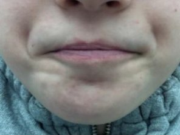
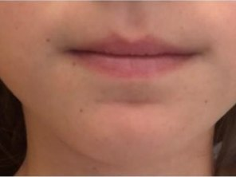
Clinical study · 2020
This 8-year-old was one of 40 children with a tongue-thrust swallow who wore a myofunctional appliance for 15 minutes a day. Before treatment, the lips and chin strained with every swallow. After 6 months, they stayed relaxed. The 33 children who wore the appliance as directed had their swallowing pattern corrected, and their lip strength more than doubled.
Treatment Myofunctional appliance worn daily
Quinzi V, et al. Journal of Clinical Medicine. 2020;9(8):2652. Photos: Figure 5, cropped, CC BY 4.0. Read the study
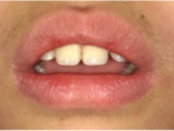
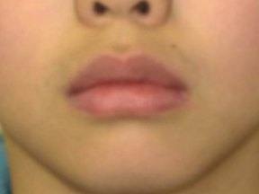
Case report · 2026
A 9-year-old boy rested with his lips apart and pushed his tongue forward when speaking. His dentist gave him tongue-raising exercises, reviewed at visits every 2 to 3 months, along with a custom mouthguard with small holes that let his tongue feel the roof of his mouth. By age 10 he could lift his tongue on his own, rested with his lips closed more often, and thrust his tongue less when speaking. The authors note they cannot separate the effect of the mouthguard from the exercises.
Treatment Myofunctional therapy with a custom mouthguard
Otsugu M, et al. Pediatric Reports. 2026;18(1):16. Photos: Figures 3 and 8, cropped, CC BY 4.0. Read the case
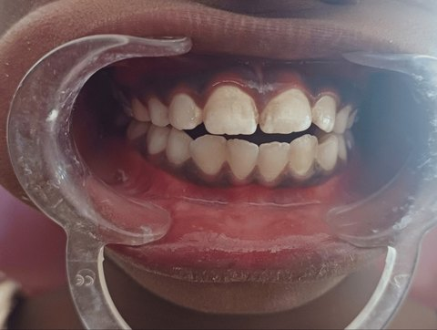
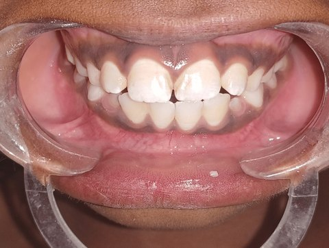
Case report · 2024
An 11-year-old boy who sucked his thumb and rested his tongue low and forward had an open bite, where the front teeth do not meet. He wore a palatal crib, a wire guard behind the upper front teeth that blocks the thumb and tongue, and did daily tongue exercises at home with a parent’s help. After three months, his front teeth met normally.
Treatment Palatal crib with daily myofunctional exercises
Chandel R, et al. Cureus. 2024;16(6):e63549. Photos: Figures 1 and 4, cropped, CC BY 4.0. Read the case
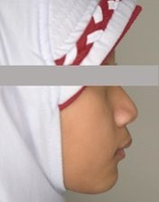
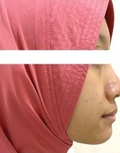
Case report · 2023
A 9-year-old girl had a convex profile, with a receding lower jaw, protruding upper front teeth, and an overactive chin muscle. For 12 months she wore a series of myofunctional trainers for an hour or two a day and overnight, while retraining her habits: breathing through her nose, resting her tongue on the roof of her mouth, and swallowing correctly. Her profile became more balanced, and her upper and lower jaws moved into a normal relationship. Because she was still growing, some of the change may come from normal growth. Braces followed to finish aligning her teeth.
Treatment Myofunctional trainers with habit retraining
Alhasyimi AA, Syahfik I. Case Reports in Dentistry. 2023;2023:8201195. Photos: Figure 1, cropped, CC BY 4.0. Read the case
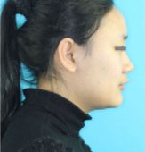
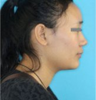
Case report · 2020 · Adult
A 22-year-old woman had protruding upper teeth, a habit of biting her lower lip, and lips that did not rest closed. During 18 months of braces, she also held a coin between her closed lips for at least 2 hours a day to strengthen them. Her lip biting stopped, her lips rested closed, and four years later her results had held.
Treatment Braces with daily lip exercises
Hou J, Meng X. Clinical Case Reports. 2020;8(7):1171–1179. Photos: Figures 1 and 5, cropped, CC BY 4.0. Read the case
Photos are reproduced from the original articles under the Creative Commons Attribution 4.0 license and cropped to show each comparison. Summaries are based on each published report.
Research shows how myofunctional therapy supports orthodontic results, tongue-tie care, jaw comfort, children’s breathing, and sleep. Here are key published studies in plain language. Each links to the original paper on PubMed, the U.S. National Library of Medicine’s research database.
Comparative study · 2010
In 76 patients with an open bite (front teeth that do not meet), those who had myofunctional therapy along with orthodontic treatment averaged 0.5 mm of relapse, compared with 3.4 mm in a group treated with orthodontics alone.
Smithpeter J, Covell D. American Journal of Orthodontics and Dentofacial Orthopedics. 2010;137(5):605–614. Read on PubMed
Patient survey · 2019
The Breathe Institute surveyed 348 patients, ages 2 to 79, treated for restricted tongue movement with tongue-tie release plus myofunctional therapy. 91% were satisfied and 87% reported a better quality of life, with improvements in mouth breathing, snoring, clenching, and muscle tension. Minor complications occurred in under 5% of cases. Results are self-reported, and the authors call for studies with objective measurements.
Zaghi S, et al. Laryngoscope Investigative Otolaryngology. 2019;4(5):489–496. Read on PubMed
Randomized controlled trial · 2010
30 adults with jaw joint and muscle disorders were assigned to myofunctional therapy, a bite splint, or no treatment. Both treatments helped, but the therapy group did better on several measures, including muscle and jaw-joint pain and headache frequency. By the end, their results were similar to a comparison group without TMD.
de Felício CM, et al. CRANIO. 2010;28(4):249–259. Read on PubMed
Randomized controlled trial · 2015
Some children still have sleep apnea after their tonsils and adenoids are removed. In this trial of 27 children, around 6 years old, with leftover symptoms, 2 months of exercises improved sleep study scores by 58%, compared with 7% in children who did not do the exercises. Mouth breathing decreased and lip seal improved.
Villa MP, et al. Sleep and Breathing. 2015;19(1):281–289. Read on PubMed
Randomized controlled trial · 2017
54 children, average age 7, with sleep-disordered breathing were randomly assigned to therapy or no therapy. After 2 months of therapy, children breathed through the mouth far less, had stronger tongues with better endurance, and had higher oxygen levels overnight.
Villa MP, et al. Sleep and Breathing. 2017;21(4):1025–1032. Read on PubMed
Retrospective study · 2013
Researchers followed 24 children whose sleep apnea had been resolved with surgery and orthodontics. The 11 who completed 24 months of myofunctional therapy were still healthy at follow-up about 2 to 4 years later, while the 13 who did not have therapy saw their symptoms return.
Guilleminault C, et al. Sleep Medicine. 2013;14(6):518–525. Read on PubMed
Systematic review & meta-analysis · 2015
A Stanford-led team pooled the results of earlier studies. In adults, therapy lowered the apnea-hypopnea index (breathing pauses per hour of sleep) by about 50%, and snoring, daytime sleepiness, and oxygen levels improved. In children, the index dropped by about 62%. The authors suggest therapy as an add-on to other sleep apnea treatments.
Camacho M, et al. Sleep. 2015;38(5):669–675. Read on PubMed
Randomized controlled trial · 2009
31 adults with moderate sleep apnea did either about 30 minutes a day of tongue, soft palate, and throat exercises or a placebo routine for 3 months. The exercise group had fewer breathing events (from 22.4 to 13.7 per hour), less snoring, less daytime sleepiness, and better sleep quality. The placebo group did not change.
Guimarães KC, et al. American Journal of Respiratory and Critical Care Medicine. 2009;179(10):962–966. Read on PubMed
Randomized controlled trial · 2015
39 adults who snore (with primary snoring or mild to moderate sleep apnea) did either 3 months of daily mouth and throat exercises or a control program of nasal strips and breathing exercises. Snoring, measured with sound recordings during sleep studies, was cut roughly in half in the exercise group, with no significant change in the control group.
Ieto V, et al. Chest. 2015;148(3):683–691. Read on PubMed
Systematic review & meta-analysis · 2020
A University of Southern California review of 9 randomized trials (394 adults and children) found breathing events improved by about 40% on average after respiratory muscle therapy, which includes myofunctional exercises. The authors recommend it as an add-on treatment and note that the studies were small and at high risk of bias, so more research is needed.
Hsu B, et al. Journal of Clinical Sleep Medicine. 2020;16(5):785–801. Read on PubMed
An airway, sleep, and breathing clinic in Los Angeles led by Dr. Soroush Zaghi, and the team behind several of the studies above.
Website YouTubeA nonprofit founded in 1971 that certifies therapists and sets standards for the field, with answers to common questions.
WebsiteFrom the American Academy of Sleep Medicine: reliable, patient-friendly information on snoring, sleep apnea, and healthy sleep.
WebsiteWe are happy to talk through what you have read and whether therapy may be a fit. We are taking consultation requests ahead of our 2027 opening.
Request a ConsultationThese resources are for general education and are not medical advice. Study summaries are based on each paper’s published abstract. Outside links open sites we do not control.